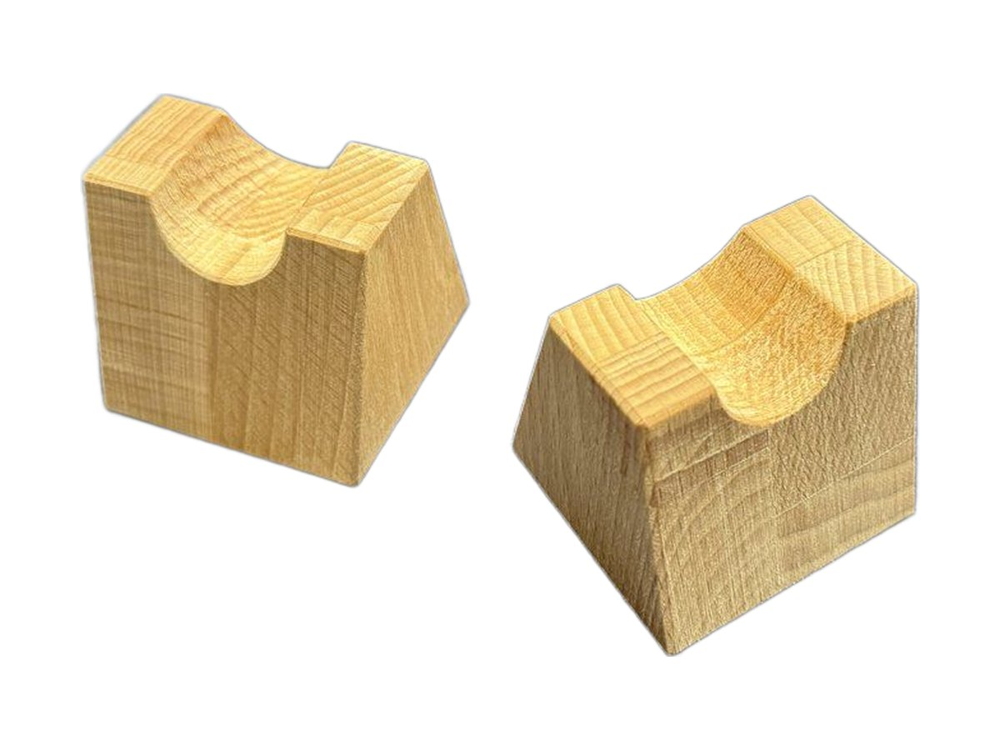

Accessories
Wooden accessories, handmade.
The small pieces that complete your system: DAP stands, lifters to keep cables off the floor, wooden headphone stands with metal parts.

Wooden DAP stand
A small desktop stand that holds your portable digital player upright and tilted: display and controls always within reach, cables tidy.
See the DAP stand
Extrasound Bridge cable lifters
Small solid Beech blocks with a notch on top, to keep your system's cables raised off the floor and the furniture.
See BridgeNeed a different size?
Fabrizio also builds new pieces, to the dimensions of your equipment and your home.